Precise language control requires embodied models to follow instructions governing both task outcomes and execution. Although recent methods train policies to follow increasingly detailed commands, existing benchmarks often assess instruction following alongside perception, planning, and generalization to unfamiliar scenes. Higher task success therefore offers limited evidence of closer adherence to instructions.
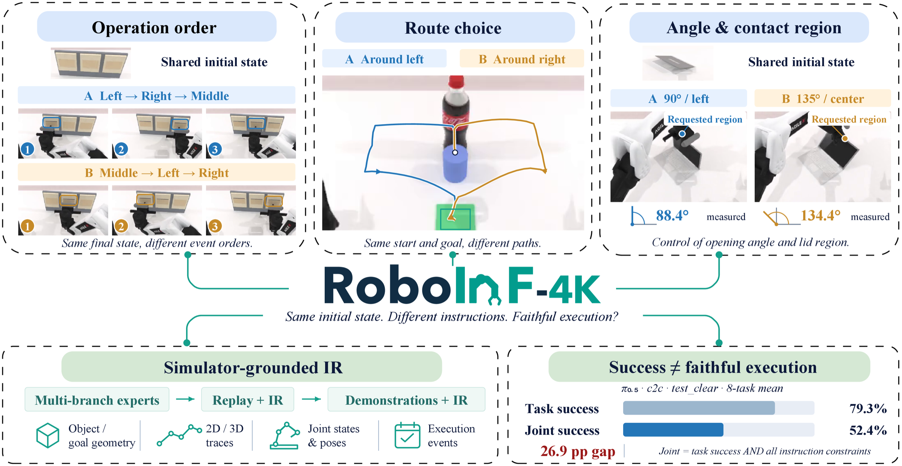
We introduce RoboInF, a benchmark measuring how reliably manipulation policies adapt their behavior to changes in an instruction. For each of eight tasks, six to twelve expert-validated instruction branches vary the requested goal, procedure, or manipulation detail while holding the initial scene and robot state fixed. Task-specific checkers verify the terminal goal and use recorded trajectories, contacts, and event sequences to assess compliance throughout execution. The accompanying RoboInF-4K dataset pairs 4,242 expert demonstrations with simulator-derived annotations of motion and contact.
Tasks
Eight tasks, counterfactual branches
Every branch of a task starts from the same initial scene and robot state; only the instruction changes. Training uses clear demonstrations; test_random additionally randomizes appearance.
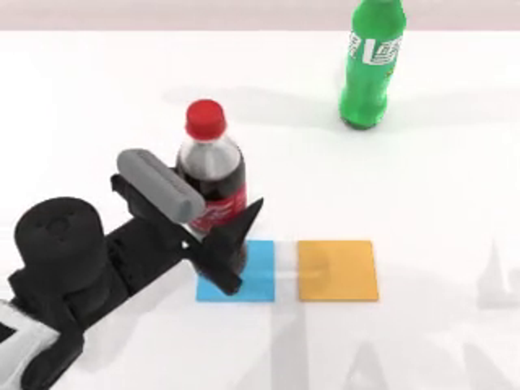
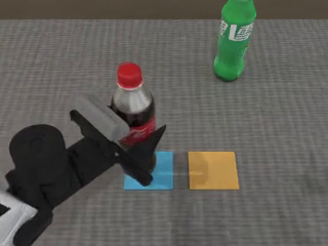
clear ↔ random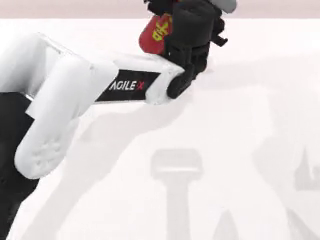
 clear ↔ random
clear ↔ random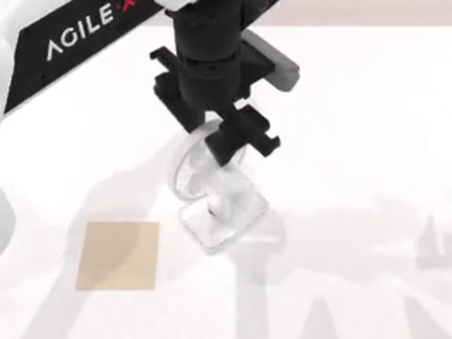
 clear ↔ random
clear ↔ random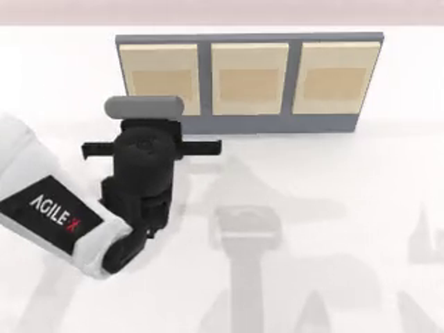
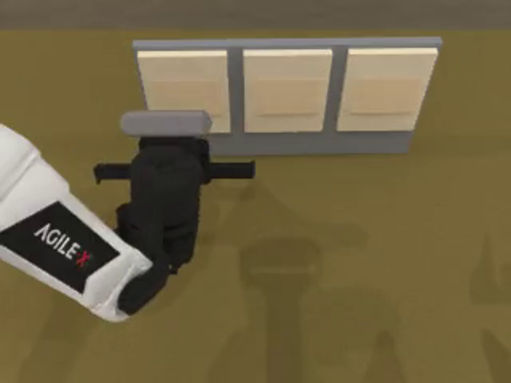
clear ↔ random
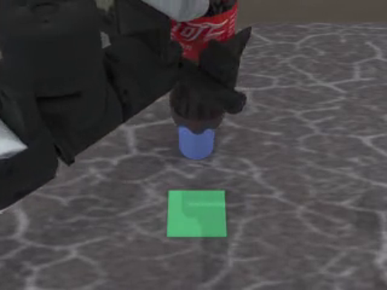
clear ↔ random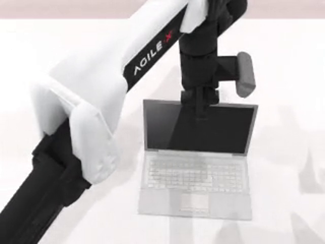
 clear ↔ random
clear ↔ random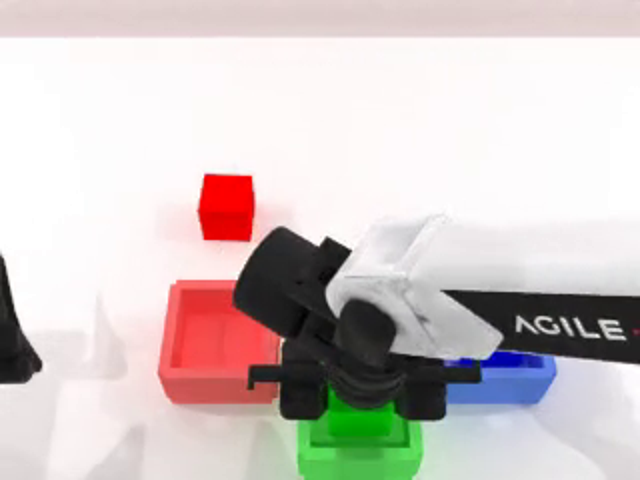
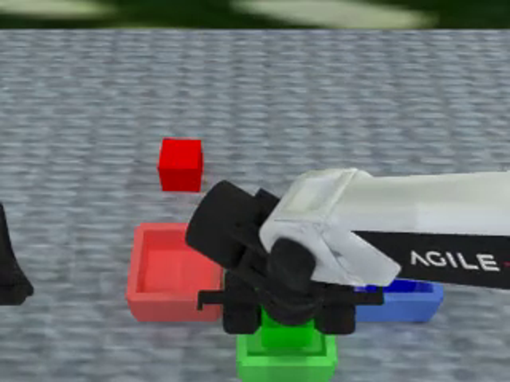
clear ↔ random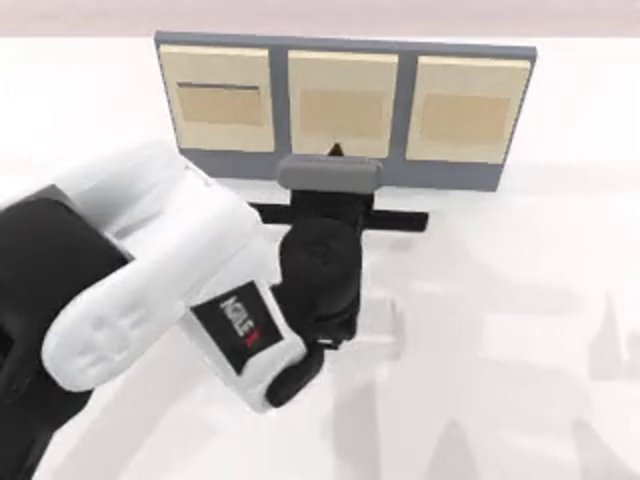
 clear ↔ random
clear ↔ randomMethod
Data collection engine
Multi-branch experts → Replay + IR → Demonstrations + IR
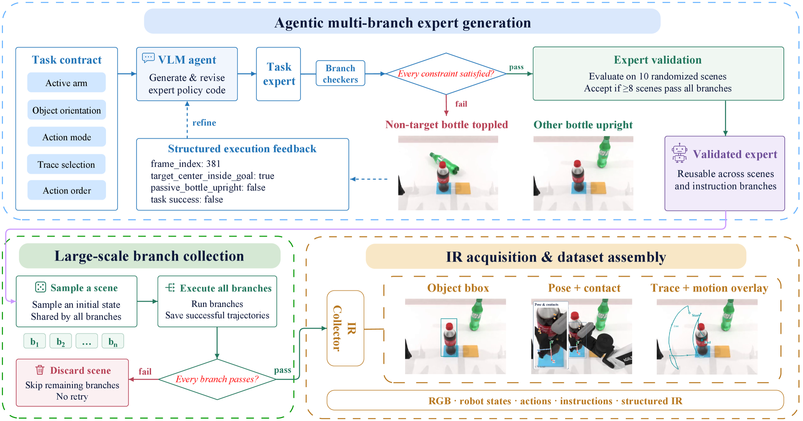
Dataset
RoboInF-4K
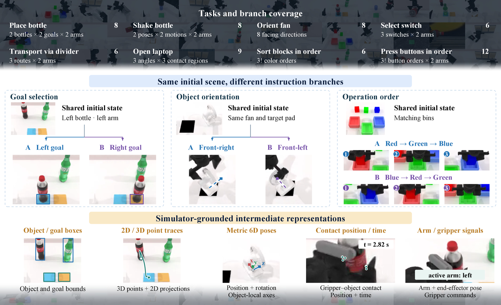
Leaderboard
Success ≠ faithful execution
c2c/c2r: trained on clear, tested on clear/randomized; _ir: IR-supported hierarchical control (Steerable Policies). Averages weight tasks equally.Citations
Cite our work
@article{guo2026roboinf,
title = {{RoboInF}: A Benchmark for Instruction Fidelity in Robotic Manipulation},
author = {Guo, Jiawei and Huang, Yu and Dong, Dijiang and Liu, Yue and Ren, Peiran and Shen, Wei},
journal = {arXiv preprint},
year = {2026}
}